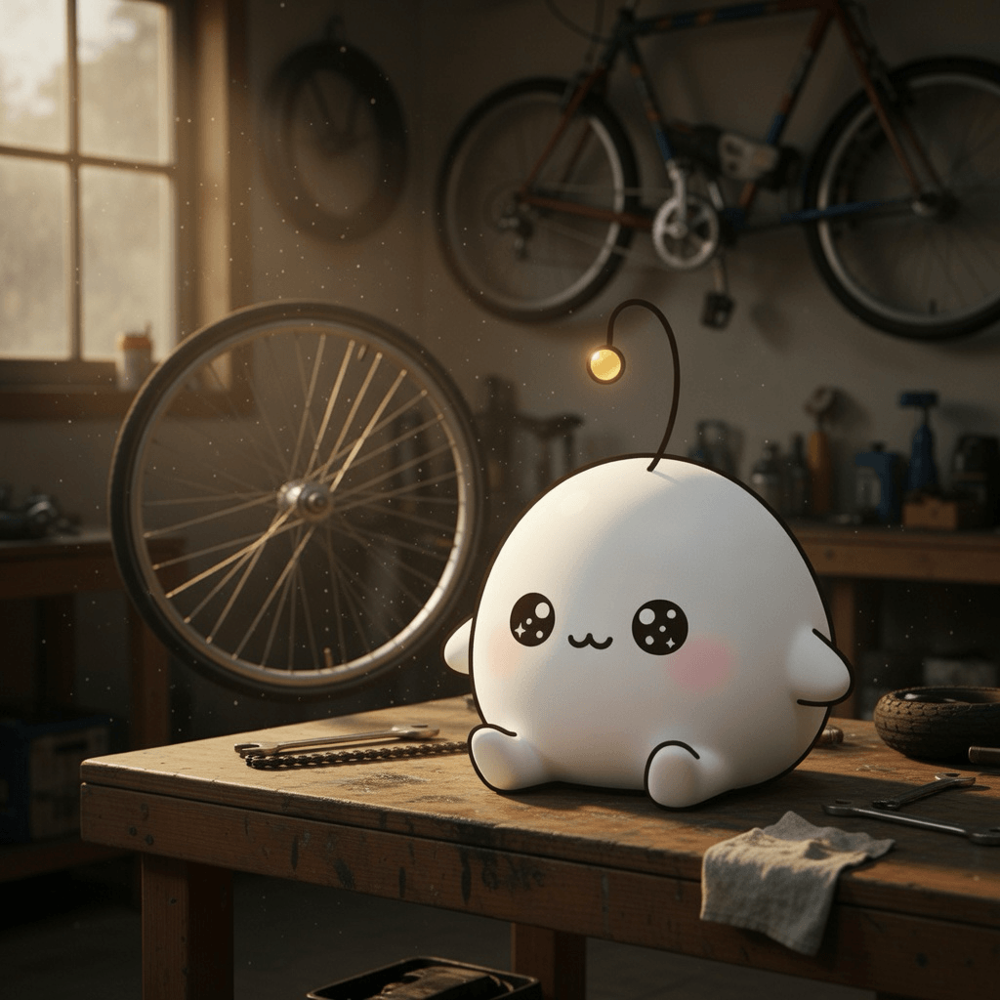

October 1, 2026
October 1, 2026

Inspiration
Shimano Bicycle Museum Review
A museum of bicycle parts is really a museum of wear — freewheels, bearings, and crank arms kept behind glass as evidence of roads they no longer touch. The collection honors the fact that these objects were made to be consumed, and preserves them anyway.
Pi Durable
Software built to keep running long after its authors have moved on. Durability here is not a feature bolted on but a property of the structure — systems that hold their shape while the world changes underneath them.
Automatic Transmission – a data-privacy study of connected vehicles
Every drive leaves a trail the car chose to keep. The study asks what a connected vehicle records, who reads it, and what it means that the machine remembers a trip its driver only wanted to forget.